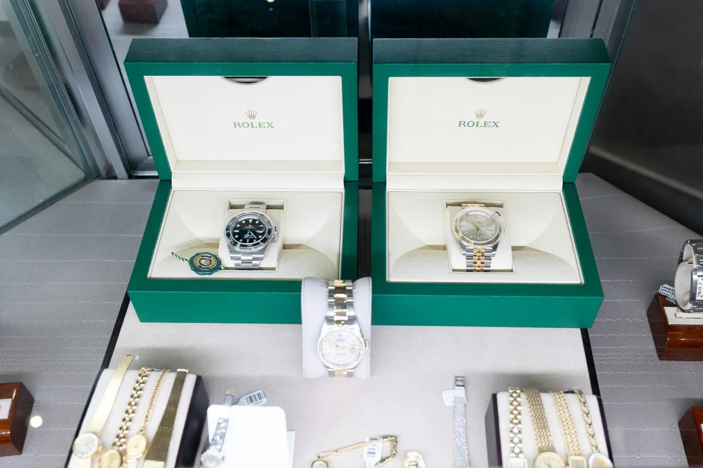

Search this question and almost every answer you'll read was written by someone who sells grey-market watches — a reseller, a marketplace, a dealer. Their verdict is always, quietly, the same: "Yes, it's safe — if you buy from us." That's not a lie, exactly. It's just not impartial. Stories To Watch doesn't sell a single watch, hold inventory, or authenticate anything. We connect buyers to verified dealers and take no side in the transaction — which is precisely why we can give you the answer the sellers can't: the honest one.
The Short Answer
Yes — a grey-market watch from a reputable seller is safe in the way that matters most: it's a genuine, brand-made watch, not a fake, and buying it is completely legal. What you're actually risking isn't authenticity — it's the manufacturer's warranty, factory service and resale. Buy from a verified dealer and even those risks shrink to almost nothing.
That's the whole article in three sentences. The rest is the detail a real decision needs — because "grey market" gets conflated with things it isn't, the risks are specific and worth understanding, and the single biggest variable in whether you get burned isn't the market at all. It's the seller.

Grey Market ≠ Black Market ≠ Pre-Owned
Most of the fear around the grey market comes from confusing three completely different things. Get the definitions straight and half the anxiety disappears.
Grey Market
Brand-new, 100% authentic watches sold outside a brand's authorised network. Fully legal. The "grey" refers to the channel, never the product.
Pre-Owned
Previously owned pieces — worn, vintage, or unworn "like new" — from collectors, auctions and specialists. Also genuine, just not new.
Counterfeit
Illegal fakes, or stolen goods. This is the only genuinely unsafe category — and it's a different world entirely from the grey market.
A grey-market watch is the same object you'd buy at the boutique — same factory, same movement, same case — sold by someone the brand didn't authorise. Brands dislike this because it undercuts their pricing and distribution control, not because there's anything wrong with the watch. Buying and selling grey-market watches is legal in the US, UK and EU. So when a headline asks "is it fake?", the honest answer is: no, not if the seller is reputable. Which brings us to the part that actually matters.
What You're Actually Risking
Here's where impartiality earns its keep, because this is exactly what the sellers gloss over. The risks are real, they're specific, and none of them is "you'll get a fake" — provided you buy carefully.
- The factory warranty. This is the big one. Rolex, Audemars Piguet and Patek Philippe honour their warranty only on watches bought from an authorised dealer — buy grey and you're typically outside it. Notable exceptions: Omega and Breitling run serial-activated international warranties valid regardless of where you bought the watch. Policies change, so confirm the current terms with the specific brand.
- Factory service. Even out of warranty, some brands will refuse service to grey-market owners, or charge premium fees. For a watch you plan to keep and service for decades, that's a real cost to price in.
- "Frankenwatches" and swapped parts. The genuine authenticity risk isn't a wholesale fake — it's a real watch with a refinished dial, a swapped bezel, or non-original parts. A reputable dealer opens the caseback and checks against factory data; a bad one doesn't.
- Box, papers and resale. Missing or unstamped papers dent resale value and can complicate any future warranty claim. On the grail references, full box-and-papers is part of the price.
- Weak returns. Some sellers offer little or no return window. Without one, a wire transfer to a stranger is exactly as risky as it sounds.
The risk was never that the watch is fake. It's that the warranty, the service and the paperwork quietly become your problem.
What You Save — and Why the Grey Market Exists
An impartial guide cuts both ways: the grey market exists because it solves a real problem, and pretending otherwise would be its own kind of dishonesty. Two things bring buyers here.
Access. The most-wanted steel sports watches — the ceramic Daytona, the Nautilus, the Royal Oak — carry multi-year authorised waitlists you may never reach. The grey market is where those references are actually available to buy today, at a premium. Discount. On the flip side, less-hyped references — dress watches, quieter complications — often sell grey below retail, because that's where authorised-dealer overstock ends up. The engine underneath is simple: ADs offload excess allocation to wholesalers, and that supply becomes the grey market. It's the pressure valve of an over-demanded, under-supplied industry — not a scam.
How to Buy a Grey-Market Watch Safely
If you decide the trade-off is worth it, the difference between a great buy and a horror story is entirely in the diligence. This is the checklist.
- Match the serial and reference. Confirm the serial and reference numbers correspond to the exact model — and to the papers, if they're included.
- Demand photos of the actual watch. High-resolution images of that specific piece, not stock or catalogue shots. A seller who won't provide them is a seller to walk away from.
- Verify the seller is real. A physical business address, a trading history, and independent reviews — not just a slick website.
- Pay with recourse. Credit card or escrow, never wire-only. If the only accepted payment leaves you no way to claw it back, that's the answer.
- Get the return policy in writing. A clear, written return window is your safety net. No policy, no deal.
- Authenticate anything serious. For a watch over roughly $10,000, have it independently inspected by a certified watchmaker or a third-party authenticator before you release final payment.
Do all six and grey-market risk drops from "gamble" to "informed purchase." But notice what every single item on that list really tests. Not the market. The seller.
The Safest Path: Buy From a Verified Dealer
Strip everything back and the honest conclusion is this: "grey versus authorised" is the wrong question. A shady authorised-adjacent flipper can burn you; a serious grey specialist with real authentication, in-house warranty and a written return policy is a genuinely safe place to spend five figures. The variable that decides your outcome isn't the channel — it's whether the seller is trustworthy.
Which is the entire reason Stories To Watch exists. We don't sell watches, so we've no incentive to point you anywhere but the right place. The Watch Finder aggregates verified sources — authorised dealers, vetted grey-market and pre-owned specialists, auction houses — every one manually checked on reputation and authentication standards, never on advertising spend. It's the literal answer to the anxiety this article is about. The real question was never "is the grey market safe?" It was "who can I actually trust?" — and that's the one thing a connector who sells nothing is built to answer.
Watch Finder
Find a verified dealer — authorised, pre-owned & grey
Every source manually vetted · never pay-to-list · Rolex · Patek · AP and beyond